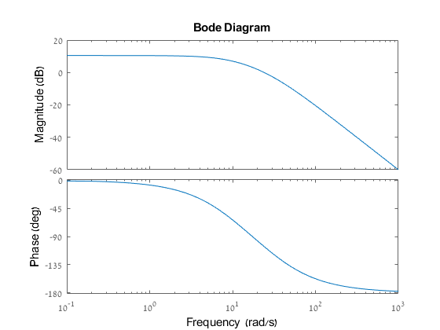
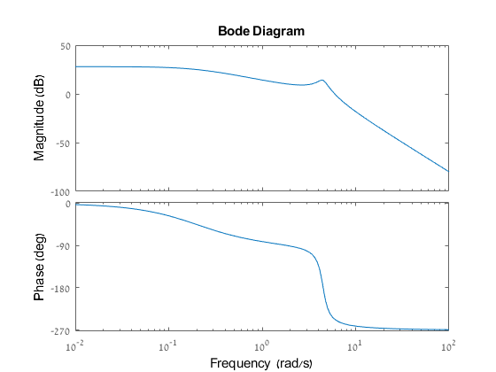
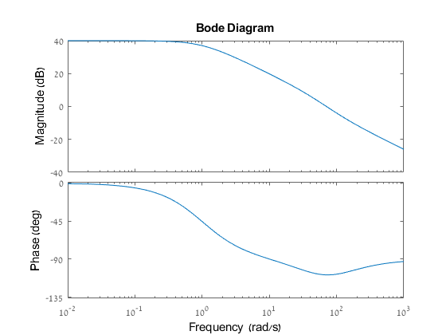
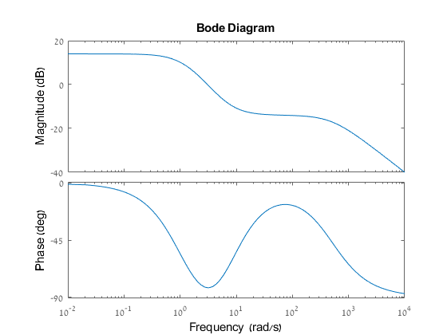
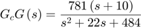
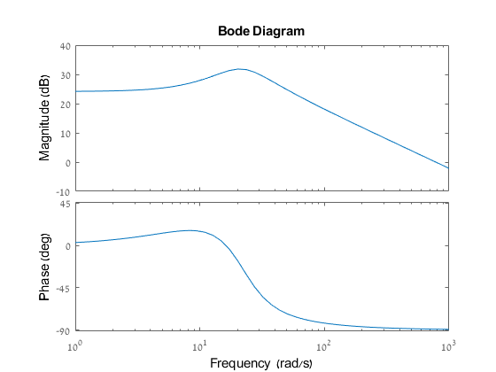
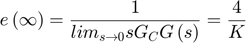
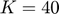
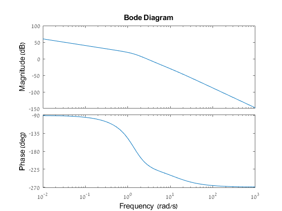

Contents
Student ID
ID = 316098052; disp(ID)
316098052
1 Sketch a Bode plot
The crossover frequency is the frequency in which the equation satisfy:

G_0 = tf([0 0 1000],[1 40 300]); bode(G_0) cross_freq = allmargin(G_0); cross_freq.PMFrequency
ans = 24.0214
G_1 = tf([0 0 100],[1 1.2 20.2 4]); bode(G_1) cross_freq = allmargin(G_1); cross_freq.PMFrequency
ans =
5.9700
 G_2 = tf([0 50 5000],[1 51 50]); bode(G_2) cross_freq = allmargin(G_2); cross_freq.PMFrequency
ans = 70.7054
G_3 = tf([100 1400 5000],[1 503 1502 1000]); bode(G_3) cross_freq = allmargin(G_3); cross_freq.PMFrequency
ans =
3.0682
 2 Space robot
1. The Bode diagram of the system:

G_c = tf([0 781 7810],[1 22 484]); bode(G_c) [mag,phase,wout] = bode(G_c); [M,I] = max(mag); max_mag = M freq_at_max_mag = wout(I) phase_at_max_mag = phase(I)
max_mag = 39.0387 freq_at_max_mag = 20.1742 phase_at_max_mag = -16.5243
3 Closed loop system
1. Velocity error voefficient:
The steady state of ramp input is:


Therefore the required K is:

2. Bode plot of the open-loop system:
The transfer system is:

G_c = tf([0 40 200],[1 12 22 20 0]); bode(G_c) cross_freq = allmargin(G_c); cross_freq.PMFrequency
ans =
2.7733
